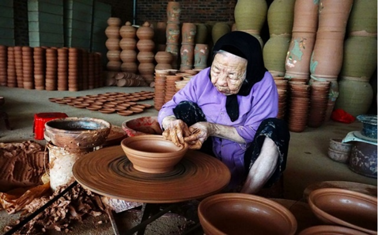

WIKI VIỆT NAM

Làng dân ca quan họ Bắc Ninh vốn nổi tiếng với nhiều danh lam thắng cảnh thu hút đông đảo khách du lịch. Vậy đâu là những địa điểm du lịch Bắc Ninh đặc sắc thu hút nhiều du khách tìm đến khám phá nhất? Nhắc đến Bắc Ninh, người ta đều sẽ nghĩ ngay về một vùng đất nổi tiếng của nền dân ca quan họ truyền thống, với vô số đền chùa lớn nhỏ và rất nhiều di tích lịch sử đặc sắc. Vậy đâu là những địa điểm du lịch Bắc Ninh nổi tiếng mà bạn nên tìm đến khám phá trong chuyến du lịch sắp tới? Hãy cùng theo chân Du Lịch Việt tìm hiểu ngay bên dưới đây nhé!
Chùa Bút Tháp từ lâu đã được công nhận là Di tích lịch sử cấp quốc gia và là một trong những địa điểm du lịch Bắc Ninh nổi tiếng được đông đảo du khách biết đến. Dù đã tồn tại suốt bao nhiêu năm tháng qua nhưng chùa Bút Tháp vẫn luôn mang một vẻ đẹp cổ kính rất ấn tượng và thu hút.
Chùa Bút Tháp đúng như tên gọi của nó, nổi bật với hình dáng trông giống hệt như cây bút đang nằm hiên ngang giữa trời. Ngôi chùa này nằm ngay bên cạnh dòng sông Đuống Bắc Ninh thu hút đông đảo khách du lịch ghé đến check in. Tại chùa Bút Tháp, du khách sẽ có thể thoải mái đi dạo trong khuôn viên rộng lớn của chùa, được chiêm ngưỡng nét kiến trúc độc đáo có một không hai này.
Địa chỉ: thôn Bút Tháp, xã Thuận Thành, tỉnh Bắc Ninh
Làng tranh Đông Hồ vốn là một làng nghề đã nổi tiếng từ xưa đến nay, là cái nôi của những bức tranh gỗ được tạo nên với những gì quen thuộc nhất của làng quê Việt Nam. Đến tham quan làng tranh Đông Hồ trong chuyến du lich Bac Ninh, du khách sẽ có thể chiêm ngưỡng được những bức tranh sống động, những tác phẩm xuất chúng của các nghệ nhân nổi tiếng được lưu giữ từ biết bao đời nay. Đặc biệt hơn hết, bạn còn được tìm hiểu về quy trình làm nên những bức tranh Đông Hồ xinh đẹp và có thể tận mắt nhìn thấy những người nghệ nhân đang cần mẫn vẽ tranh nữa đấy.
Tham quan làng tranh Đông Hồ
Địa chỉ: xã Song Hồ, huyện Thuận Thành, tỉnh Bắc Ninh
Chợ Ninh Hiệp từ lâu đã trở thành một cái tên vô cùng hot đối với rất nhiều người, đây là nơi cung cấp mối sỉ quần áo lớn và rẻ nhất ở khu vực miền Bắc nước ta. Đến tham quan chợ Ninh Hiệp trong chuyến du lịch Bắc Ninh, bạn sẽ thật sự choáng ngợp khi lạc bước vào thiên đường quần áo và thỏa sức chọn lựa được nhiều món đồ xinh mà mình yêu thích. Đặc biệt, du khách cũng có thể tìm đến chùa Nành và đền Trúc Lâm ở gần chợ Ninh Hiệp để có thể viếng Phật và tham quan nữa đấy.
Địa chỉ: làng Nành, xã Ninh Huyện, tỉnh Bắc Ninh
Nhắc đến những địa điểm tham quan nổi tiếng trong tour du lịch Bắc Ninh, chắc chắn sẽ chẳng thể nào quên kể đến đền Bà Chúa Kho - một khu di tích lịch sử mang ý nghĩa to lớn đối với dân tộc Việt Nam ta. Đền Bà Chúa Kho Bắc Ninh thuở xưa được xây dựng nên bởi sự kiện Lý Thường Kiệt đã lãnh đạo cuộc kháng chiến chống quân Tống xâm lược và nó chính là địa điểm đặt kho lương thực của quân dân ta. Nhờ sự khéo léo và tài tình của mình, Bà đã giúp tích trữ được lương thực và góp công rất lớn vào cuộc kháng chiến vĩ đại ấy. Cũng chính vì điều này mà người dân Bắc Ninh vì quá nhớ thương đã lập nên đền thờ Bà Chúa Xứ nổi tiếng ngày nay.
Khám phá đền Bà Chúa Kho
Địa chỉ: núi Kho, Cổ Mễ, phường Vũ Ninh, tỉnh Bắc Ninh
Nhắc đến những địa điểm tham quan nổi tiếng trong tour du lich Bac Ninh, chắc chắn chúng ta sẽ không thể nào quên nhắc đến một ngôi làng gốm rất nổi tiếng nằm ngay cạnh con sông Cầu thơ mộng, đó chính là làng gốm Phù Lãng. Ngôi làng này được hình thành từ thời nhà Trần và vẫn luôn được lưu giữ, bảo tồn mãi cho đến tận ngày nay.
Đến tham quan làng gốm Phù Lãng, khách du lịch Bắc Ninh thực sự sẽ cảm thấy vô cùng ấn tượng khi khắp nơi đều là đất sét và trưng bày các vật dụng bằng gốm rất quen thuộc, được trang trí một cách kỳ công, tỉ mỉ. Tận mắt chiêm ngưỡng quy trình làm gốm của những người nghệ nhân tại đây, bạn chắc chắn sẽ có một cái nhìn rất khác về làng nghề truyền thống này và đặc biệt là trân trọng hơn bao giờ hết những giá trị mà những người nghệ nhân đã tạo nên.
Làng gốm Phú Lãng truyền thống nổi tiếng
Địa chỉ: huyện Quế Võ, tỉnh Bắc Ninh
This site was created with the Nicepage